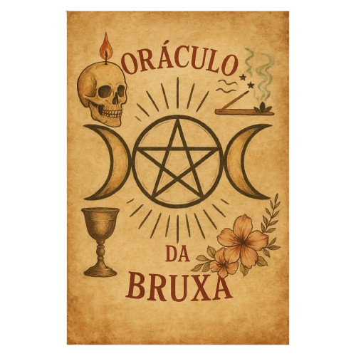
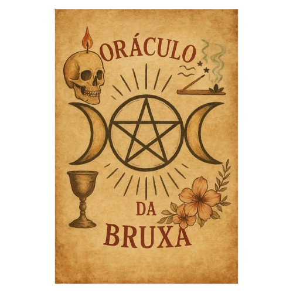

Sorte do Dia
É um oráculo simples, que espero que possa trazer uma mensagem dos Deuses para vocês. 
Este é um espaço dedicado à cada Deusa e Deus que nosso coven adora. Juntos celebraremos todos eles e aprenderemos sobre Eles com cada um de vocês, compartilhando seu conhecimento e histórias.
É um oráculo simples, que espero que possa trazer uma mensagem dos Deuses para vocês. 